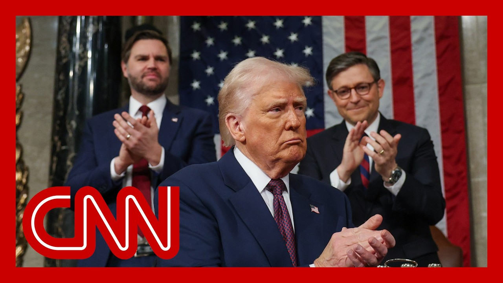

【众议院共和党公布特朗普税改计划细节】
Summary: House Speaker Mike Johnson is working to unite Republicans and advance Trump's agenda, facing opposition from both conservatives and moderates as key committees hold hearings on sweeping changes to food stamps, Medicaid, and tax policies.
摘要： 众议院议长迈克·约翰逊正努力团结共和党并推进特朗普的议程，同时面临保守派和温和派的反对，关键委员会将就食品券、医疗补助和税收政策的全面改革举行听证会。

⏱️ Estimated Reading Time: 14 min
House Speaker Mike Johnson is trying to hold his Republican conference together and prevent any small factions from seeking his party's sweeping agenda.
众议院议长迈克·约翰逊正试图团结共和党会议，防止任何小派系阻挠该党的全面议程。
His efforts come amid warning signs from both hardliners and moderates as lawmakers return to Capitol Hill today.
他的努力正值强硬派和温和派发出警告之际，议员们今日重返国会山。
Let's get right to CNN's Lauren Fox, who joins us now with some new reporting.
让我们直接连线CNN的劳伦·福克斯，她将带来最新报道。
You know how much we love new reporting, Lauren, what have you learned?
你知道我们多喜欢新消息，劳伦，你了解到什么？
Yeah, I mean, it's really go time for several of the House's key committees as they begin to move forward with Donald Trump's agenda.
是的，众议院多个关键委员会正着手推进特朗普的议程。
They're going to hold key hearings today on Capitol Hill in the powerful Ways and Means Committee and the Energy and Commerce Committee, as well as in the Agriculture Committee.
他们今天将在国会山的筹款委员会、能源与商业委员会以及农业委员会举行重要听证会。
And they are going to be looking at making some sweeping changes to the country's food stamp program, to Medicaid, as well as making sure that some of Donald Trump's signature items from the 2017 tax bill are renewed alongside some new proposals, including a temporary effort to try and stop taxes on tips and taxes on overtime.
他们将考虑对食品券计划和医疗补助进行重大改革，并确保2017年税法的部分核心条款与新提案一起延续，包括暂时取消小费和加班收入的税收。
So those are the kinds of policies that they're going to be moving forward with today.
这些就是他们今天要推进的政策。
But the task ahead for the House Speaker is one that is going to be massive, and that is because he is really trying to hold together a very fragile coalition in the House of Representatives.
但议长面临的任务十分艰巨，因为他正试图维系众议院中一个非常脆弱的联盟。
He has conservatives who are unhappy with this proposal, arguing that they need to see significant changes.
保守派对该提案不满，要求看到实质性修改。
They're very disappointed with the fact that they think leadership should have gone further in some of the Medicaid cuts.
他们对领导层未在医疗补助削减上采取更激进措施感到失望。
This is one of those conservatives, Chip Roy of the House Freedom Caucus, he said.
众议院自由党团成员奇普·罗伊表示：
I remain open minded because progress has been made based on our forceful efforts to force change, but we cannot continue down the path we've been going down, and we will need significant additional changes to garner my support.
我仍持开放态度，因为我们的施压已促成进展，但我们不能继续当前路线，必须做出更多重大修改才能获得我的支持。
Meanwhile, the speaker is also trying to work with some New York Republicans who have been adamant that they want to see a bigger increase in the state and local tax deduction for their constituents back home.
与此同时，议长还在与一些纽约州共和党人协商，他们坚持要求提高州和地方税收减免额度。
In a state like New York, which has a lot higher taxes locally, they are arguing that the 30,000 cap that they want to increase the 10,000 cap to is not high enough.
在纽约等高税率州，他们认为将1万美元上限提高到3万美元仍不足够。
And they are willing right now to stand in the way of this effort.
他们目前准备阻挠这项努力。
So the committees are going to be doing their work today, likely through the night into the morning tomorrow.
因此各委员会今天将持续工作，可能通宵至明晨。
Then we expect at the end of the week, the Budget Committee could cobble this all together.
预计预算委员会将在周末前整合所有内容。
Then next week. Is that true test when this could go to the floor for a vote?
下周可能迎来真正的考验——提交全院表决。
I did talk to the speaker a few minutes ago.
我几分钟前与议长交谈过。
He said that he was very optimistic.
他表示非常乐观。
They're going to stay on track this week, so we'll see.
本周将按计划推进，我们拭目以待。
Let's get. More now.
现在了解更多。
On the budget battle on Capitol Hill today, House Republicans are set to begin voting on a package of spending cuts as GOP leaders roll out details of President Trump's tax plan.
国会山今日展开预算战，共和党领导人公布特朗普税改计划细节，众议院共和党人准备就一揽子支出削减方案投票。
Joining us now is Republican Congressman Ryan Zinke.
现在连线共和党众议员瑞安·辛克。
He sits on the House Appropriations and Foreign Affairs committees.
他任职于众议院拨款和外交事务委员会。
So I got to just ask you this because, as you know, the average American looks at what happened in Washington and no matter who was in charge, they see hypocrisy.
我必须问这个问题，因为普通美国人看到华盛顿的运作时，无论谁掌权都觉得虚伪。
And in this case, Republicans, as you well know, attacked Democrats for spending too much.
众所周知，共和党曾指责民主党支出过度。
Even though the national debt has gone up under both parties, is it hypocritical for Republicans to punt on the debt limit for another few years so you can pay for Trump's tax cuts?
尽管两党执政期间国债都在增加，共和党推迟债务上限数年以支付特朗普减税，是否虚伪？
I think the debt limit is a serious issue, and to me, it's a simple balance sheet.
我认为债务上限是严肃问题，对我而言这是简单的资产负债表。
Whatever we find in savings and believe me, we can find savings.
无论我们节省多少——相信我我们能节省——
We had $2.5 trillion comes out $3.5 trillion.
我们从2.5万亿节省到3.5万亿。
Remember, that's over ten years.
记住这是十年期的。
So that's you know, if it's $3 trillion of savings as $300 billion a year on a $7 trillion budget.
因此每年7万亿预算中节省3000亿即300亿。
So whatever we find in savings, I am good of making sure America is not faced with a largest tax increase.
只要节省开支，我就支持确保美国不面临大规模增税。
But it's a balance sheet. that's put towards the taxes provisions.
但这是用于税收条款的资产负债表。
But that's not going debt doing it.
这不会增加债务。
And I agree with J.D. Vance.
我同意J.D.万斯的观点。
The litmus test, the report card for this is how are we doing on the bond rate?
试金石是债券利率表现。
Because that's interest which we all pay.
因为这关乎我们所有人支付的利息。
And look, if we can't control our spending, then you know what? Interest rates will go up.
如果我们无法控制支出，利率就会上升。
A third of our of our finance is funded by central banks and other countries.
我们三分之一的资金来自央行和其他国家。
And interest rates means a lot to everybody.
利率对每个人都至关重要。
That's your mortgage payment.
这关乎你的房贷。
That's your car payment.
你的车贷。
That's what the government pays for interest, which is now over $1 trillion a year.
政府每年支付的利息现已超过1万亿美元。
So let's make sure we balance the budget to the degree we can and control our spending.
因此我们要尽力平衡预算并控制支出。
But as you know, some of the more conservative members, in your caucus are saying we're not balancing the budget.
但你知道党内更保守成员批评我们未平衡预算。
You have GOP representative Chip Roy, who says the current draft of this bill still leaves more than 20 trillion in additional debt in ten years.
共和党众议员奇普·罗伊指出该草案仍会导致十年内增加20万亿债务。
Do you share his concern?
你认同他的担忧吗？
What do you say. Sir?
您怎么看？
I think America is concerned that we're just adding debt and debt in debt.
我认为美国担忧债务持续堆积。
You know, when we all pay it, when we pay, an interest rate is inflated.
我们支付时利率已膨胀。
You paid on your mortgage, your car insurance, and the government pays it on their trillion dollar a year.
你支付房贷车险，政府支付每年万亿利息。
So I am all about savings.
因此我全力支持节省开支。
Let's find savings.
让我们节省开支。
Let's make the hard decisions that we should.
做出应有的艰难决定。
And Congress, for a long, long time has been punting on these hard decisions.
国会长期回避这些艰难决定。
And now it's not time to punt.
现在不是回避的时候。
Let's face it together.
让我们共同面对。
And this should be bipartisan to make sure we control spending.
这需要两党合作控制支出。
So as you point out, there will be some hard decisions.
如你所说将有一些艰难决定。
The challenge for Speaker Johnson is getting a consensus.
约翰逊议长的挑战是达成共识。
And a big part of this plan is, of course, extending Trump's tax cuts from 2017.
该计划重要部分是延续2017年特朗普减税政策。
There was a major study done from the US Congress Joint Committee on Taxation, and it showed that the 2017 corporate tax cuts delivered almost no real wage benefits to the vast majority of workers.
国会税收联合委员会研究显示，2017年企业减税对大多数工人薪资几乎无实质提升。
Almost all the gains went to the top 10% of earners.
几乎全部收益流向收入前10%人群。
After just with the corporate tax cut to emphasize that.
仅企业减税就凸显这点。
What do you think about this idea of taxing the wealthiest?
你对向富人征税的看法是？
President Trump has followed it.
特朗普总统支持这点。
Well, I'll go back to probably Benjamin Franklin.
我要引用本杰明·富兰克林。
the merchant should not pay the same as a candle maker.
商人不应与蜡烛匠缴纳相同税额。
And even Teddy Roosevelt said, the more you make, the more you have an obligation to pay to protect the system that allowed you the opportunity to make more money.
西奥多·罗斯福说过，赚得越多，越有义务维护让你赚钱的体系。
So, you know, I'm good at the higher rates.
因此我支持更高税率。
As long as we have an incentive to make money, we're not a socialist country, but we have to look at it.
只要保持赚钱动力，我们不是社会主义国家，但必须审视。
And, you know, the corporate tax rate is not in play because that's already in law.
企业税率已由法律规定。
The provisions we're facing are things like the small business deductions, research and development deductions for married and single it, the death tax.
我们面临的是小企业抵扣、研发抵扣、遗产税等问题。
If you have a small farm out there and if we don't correct it, then we're going to lose every farm, you know, and ranch in Montana because you just don't have the money to recapitalize.
若不修正，蒙大拿的小农场和牧场将因无法再投资而消失。
There's a lot in there for the middle class.
其中很多关乎中产阶级。
I support President Trump's idea that, look, you know.
我支持特朗普总统的观点。
How much would you be willing to do in terms of taxing the wealthy?
你愿意在向富人征税上走多远？
Well, I'd have to talk to, you know, Jason Smith, who's doing a great job, by the way, and Ways and Means.
我需要与筹款委员会的杰森·史密斯商议。
But I do think you go back to the principles is the more you make, the more obligations should pay, as long as there's not, as long as you keep the incentive to do good to provide.
但原则应是赚得越多支付越多，同时保持创造财富的动力。
And, you know, the wealth in this country, it's there, but, but I'm also concerned about the middle class.
美国存在财富，但我也关心中产阶级。
I mean, I mean, there's a lot of struggling people in Montana.
蒙大拿有许多艰难谋生的人。
There's a lot of struggling people around around this country that live paycheck to check.
全国有许多月光族。
You know, they can't afford the gas, etc., etc..
他们甚至加不起油。
So, you know, I think everything is on the table.
因此我认为所有选项都应讨论。
But it goes back to this makes sure we have a balance sheet that whatever we save and I'm onboard savings, let's make sure we rolled over all the taxes so we don't get a tax, you know, bill, especially the middle class and businesses.
关键是确保资产负债表平衡，节省开支并延续所有税收政策，避免中产阶级和企业面临税单。
On Capitol Hill today.
今日国会山。
As you know, Congressman, House lawmakers are beginning votes on a package of spending cuts.
众议院正就一揽子支出削减方案开始投票。
As you know, Medicaid spending has been a target for some Republicans.
医疗补助支出是部分共和党人的目标。
Are there any changes to Medicaid you would support?
你支持哪些医疗补助改革？
Well, I strongly oppose, the Republican Party's more than $700 billion cut on Medicaid.
我强烈反对共和党削减7000多亿医疗补助。
You know, there's no congressional district in America that depends more heavily on Medicaid than mine.
没有选区比我的更依赖医疗补助。
67% of my district is enrolled in Medicaid.
选区67%人口参加医疗补助。
And people should know that Medicaid is not only health care for the lowest income, it is increasingly long term care for the disabled and the elderly and the chronically ill.
人们应知医疗补助不仅是低收入者医保，更是残障人士、老年人和慢性病患者的长护保障。
So make no mistake, these Republican cuts are an attack on the most vulnerable people in our society, the elderly and the vulnerable.
这些共和党削减实质是攻击社会最弱势群体。
I'm in favor of reforms that would make the program more efficient, but I'm not in favor of what the Republicans are doing, which is taking a machete to the most important safety net for the most vulnerable Americans.
我支持提高效率的改革，但反对共和党对重要安全网的粗暴削减。
Congressman Ritchie Torres of New York, as usual, thanks so much for joining us.
纽约州众议员里奇·托雷斯，感谢连线。
Absolutely.
不客气。